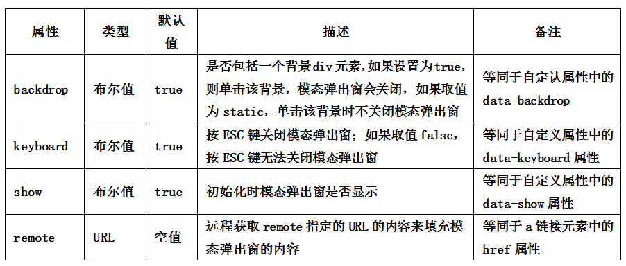

.fade动画过渡
JavaScript触发时的参数设置
在Bootstrap框架中还为模态弹出窗提供了三种参数设置，具体说明如下：
|
参数 |
使用方法 |
描述 |
|
toggle |
$(“#mymodal”).modal(“toggle”) |
触发时，反转模态弹出窗的状态。如果模态弹出窗是显示的，则关闭；反之，如果模态弹出窗是关闭的，则显示 |
|
show |
$(“#mymodal”).modal(“show”) |
触发时，显示模态弹出窗 |
|
hide |
$(“#mymodal”).modal(“hide”) |
触发时，关闭模态弹出窗 |
模态弹出窗还支持四种类型的事件，分别是模态弹出窗的弹出前、弹出后，关闭前、关闭后，具体描述如下：
|
事件类型 |
描述 |
|
show.bs.modal |
在show方法调用时立即触发（尚未显示之前）；如果单击了一个元素，那么该元素将作为事件的relatedTarget属性 |
|
shown.bs.modal |
该事件在模态弹出窗完全显示给用户之后（并且等CSS动画完成之后）触发；如果单击了一个元素，那么该元素将作为事件的relatedTarget事件 |
|
hide.bs.modal |
在hide方法调用时（但还未关闭隐藏）立即触发 |
|
hidden.bs.modal |
该事件在模态弹出窗完全隐藏之后（并且CSS动画漂完成之后）触发 |